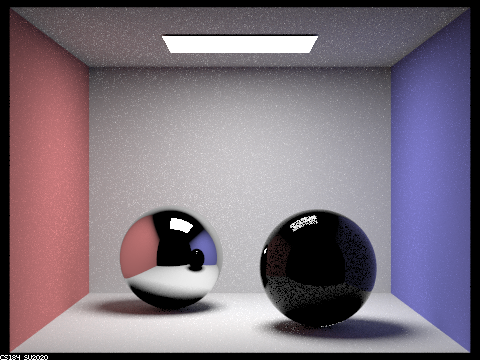
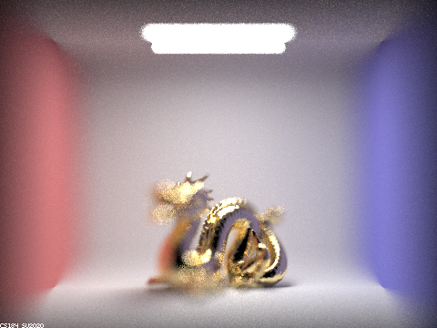

Project 3-3: Pathtracter 2
CS 184: Computer Graphics and Imaging, Spring 2022
David McAllister and James Dai
Part 1: Mirror and Glass Materials
We implemented two new material types in this project: mirror and glass materials. Mirror materials reflect incoming light rays, while glass materials simultaneously reflect and refract the rays. This is illustrated by terminating rays at different depths to contrast the materials' properties. To explain these effects, we'll act as if light rays originate at light sources, even though our pathtracer traces reverse light paths from the camera.
CBspheres with 128 samples per pixel and max ray depth of 0.
At a max ray depth of zero, only direct light sources are rendered. In this case, the light in the ceiling of the box.
CBspheres with 128 samples per pixel and max ray depth of 1.
At a max ray depth of one, we have direct illumination. The only way for a one-bounce ray to illuminate mirror or glass material is via reflection. The mirror material sphere on the left produces a sharp, direct reflection of the ceiling light, while the glass material sphere chooses to reflect or refract each ray based on a calculated probability. This leads to a noticeably noiser reflection.

CBspheres with 128 samples per pixel and max ray depth of 2.
At a max ray depth of two, the mirror material sphere begins to reflect its surroundings where light rays travel from the ceiling light, bounce off a directly-illuminated side of the box, and then reflect off the sphere. The glass material exhibits the illumination from the same ray reflection patterns, but is much darker and noisier for the same reason as with max ray depth 1.
CBspheres with 128 samples per pixel and max ray depth of 3.
Increasing the max ray depth to 3 allows refracted light rays to hit the camera sensor for the first time. Light rays travel from the ceiling light, reflect off a directly-illuminated side of the box, refract to enter the glass sphere, and finally refract to exit the glass sphere toward the camera. Alternatively, a ray can pass from the ceiling light through the glass sphere and then bounce off the ground below the sphere and into the camera, creating the hotspot under the glass ball.
The mirror sphere has a smoother illuination fall-off now that longer ray paths are enabled, but it cannot yet reflect light refracted through the glass sphere.
CBspheres with 128 samples per pixel and max ray depth of 4.
A max ray depth of 4 permits paths that refract light through the glass sphere and then reflect it off the mirror sphere into the camera. Thus, the glass sphere shows up illuminated in the mirror sphere's reflection. Also, a circular highlight is now illuminated on the wall since light rays can travel an extra bounce before entering the camera.
CBspheres with 128 samples per pixel and max ray depth of 5.
A max ray depth of 5 doesn't enable any completely new illumination effects. Instead, it smooths out shadows and highlights like the one on the right wall.
CBspheres with 128 samples per pixel and max ray depth of 100.
A max ray depth of 100, similarly improves rendering fidelity. Particularly, sections of the glass sphere are brighter since light rays can take many more paths refracting and reflecting through the geometry.
CBspheres at a very high sample rate just for fun: 4096 samples per pixel and max ray depth of 5.
Part 4: Depth of Field
Previously, we have been pathtracing with a pinhole camera model which imagines all light rays traveling through a very small hole before striking the camera sensor. Thus, there would be only one path through which light rays could illuminate each point on the sensor. The thin-lens camera model imagines light rays from the scene refracting through a lens without observed thickness and onto the camera sensor. Thus, many paths from the the scene can illuminate the same point on the camera sensor. We randomly sample these different paths to create a depth of field, or distance range from the lens in which the scene is rendered in-focus. Increasing the diameter of the aperture enables more of these paths and renders the depth of field more shallow. This allows us to make pretty bokeh lens effects.
Focus stack:
CBdragon.dae rendered with a lens radius of 0.8 and a focal distance of 4.56.
CBdragon.dae rendered with a lens radius of 0.8 and a focal distance of 4.71.

CBdragon.dae rendered with a lens radius of 0.8 and a focal distance of 4.86.
CBdragon.dae rendered with a lens radius of 0.8 and a focal distance of 5.01.
Aperture sizes:

CBdragon.dae rendered with a lens radius of 0.8 and a focal distance of 4.56.
CBdragon.dae rendered with a lens radius of 0.6 and a focal distance of 4.56.
CBdragon.dae rendered with a lens radius of 0.3 and a focal distance of 4.56.
CBdragon.dae rendered with a lens radius of 0.05 and a focal distance of 4.56.

CBdragon.dae rendered in full HD at sample rate of 512, took about 75 minutes on mobile i9 processor.
CSS styling provided by StackEdit Markdown to HTML. stackedit.io